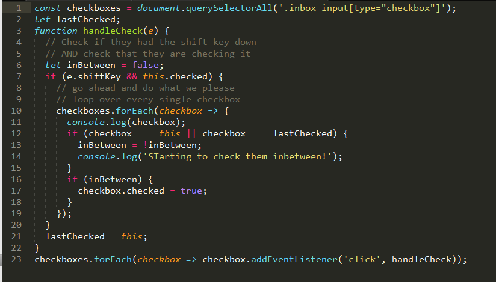

Input Checkbox
Glossary
- The checked attribute is a boolean attribute.
- When present, it specifies that an input element should be pre-selected (checked) when the page loads.
- The checked attribute can be used with (input type="checkbox") and (input type="radio").
- The checked attribute can also be set after the page load, with a JavaScript.
For example:
